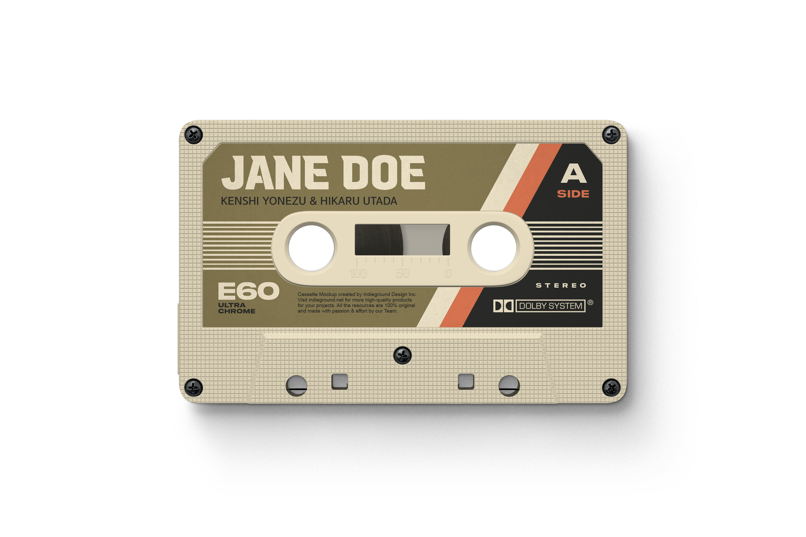
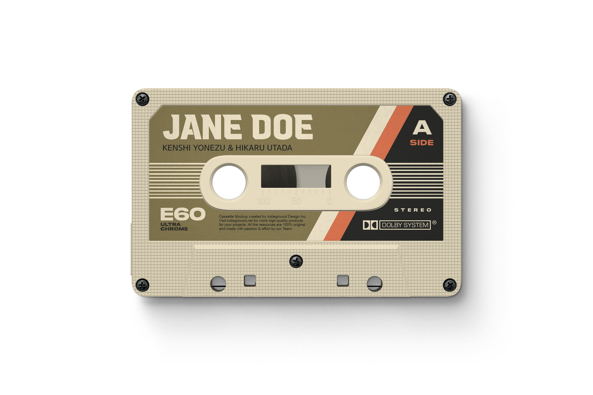

Jane Doe
Kenshi Yonezu & Hikaru Utada
Released September 24, 2025,
as a double A-side single with “Iris Out”.
Jane Doe serves as the ending theme
for *Chainsaw Man – The Movie: Reze Arc*.
Written and composed by Kenshi Yonezu,
produced by Yonezu & Yaffle.
Vocals performed by Hikaru Utada,
the first collaboration between them.
The physical release includes editions
with bonus DVD, jacket art by Yonezu,
and fan perks like serial codes
for Yonezu’s 2026 tour.